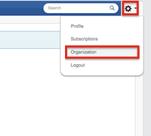
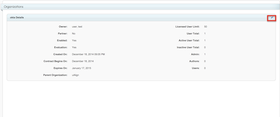
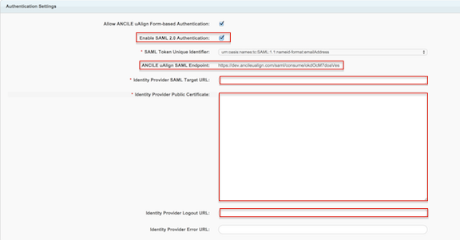
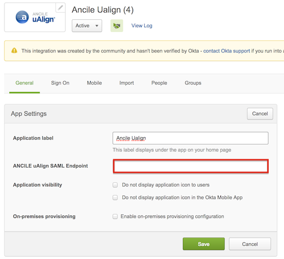

How to Configure SAML 2.0 for Ancile uAlign
This setup might fail without parameter values that are customized for your organization. Please use the Okta Administrator Dashboard to add an application and view the values that are specific for your organization.
-
Log in to you Ancile uAlign Admin console, go to the Settings gear on the upper right corner and click on Organization.

-
Next, click on the Edit icon on the right side as shown below.

- Scroll down to the Authentication Settings and check Enable SAML 2.0 Authentication.

- Copy and paste the following to the Identity Provider SAML Url field:Sign in to the Okta Admin app to generate this variable.
- Copy and paste the following to the Identity Provider Public certificate field:
Sign in to the Okta Admin app to generate this variable.
- Copy and paste the following to the Identity Provider Logout Url field:Sign in to the Okta Admin app to generate this variable.
- Next, copy the ANCILE uAlign SAML Endpoint from the Ancile uAlign Authentication Settings page, and paste it in OKta under the General tab:

- Hit Save in both Okta and Ancile uAlign.
- Done!
Note: Ancile uAlign supports both IDP-initiated and SP-initiated flows. For SP-initiated SAML authentication, go to https://app.ancileualign.com/login, enter you email address and click Next.